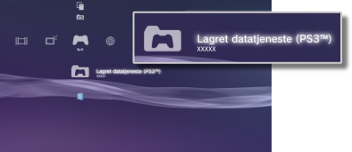

Spill > Spille PlayStation®3 Formatering programvare > Bruke lagrede data
Bruke lagrede data
Lagret data for programvare i PlayStation®3-format lagres i systemminnet. Dataene vises under  (Lagret datatjeneste (PS3™)).
(Lagret datatjeneste (PS3™)).

Tips
- Lagrede data behandles separat for hver bruker. Hvis det er mer enn én bruker under
 (Brukere), vises elementene under (Lagret datatjeneste (PS3™)) avhengig av brukeren som er logget på.
(Brukere), vises elementene under (Lagret datatjeneste (PS3™)) avhengig av brukeren som er logget på. - Hvis du velger et lagret data-ikon og trykker på
 -knappen, kan du sortere lagret data ved å oppdatere dato eller gruppelagret data etter tittel fra den menyen som vises.
-knappen, kan du sortere lagret data ved å oppdatere dato eller gruppelagret data etter tittel fra den menyen som vises.
Oppbevare lagret data på PSNSM-serveren
Du kan lagre lagret data for programvare i PlayStation®3-format på en PSNSM-server og laste den ned til et annet PlayStation®3-system for å fortsette spillet. For å bruke denne funksjonen må du ha en Sony Entertainment Network-konto og abonnere på PlayStation®Plus-abonnementstjenesten.
Automatisk lagring av lagret data
Du kan regelmessig automatisk lagre ny og nylig oppdatert lagret data i online oppbevaringstjenesten.
Du må stille inn denne funksjonen for hvert individuelt spill.
1. |
Under |
|---|---|
2. |
Velg [Lagret data auto-opplasting] og still den inn til [På]. |
 (Spill), velg spillet med lagret data som du vil lagre og trykk på
(Spill), velg spillet med lagret data som du vil lagre og trykk på Tips
- Lagret data som er oppdatert etter at innstillingen er aktivert lastes opp automatisk.
- Under
 (Innstillinger), still inn
(Innstillinger), still inn  (Systeminnstillinger) > [Automatisk oppdatering] til [Av] for å deaktivere automatisk oppdatering av lagret data.
(Systeminnstillinger) > [Automatisk oppdatering] til [Av] for å deaktivere automatisk oppdatering av lagret data.
Manuell lagring av lagret data
1. |
Velg |
|---|---|
2. |
Velg [Kopi]. |
3. |
Velg [Online lagring] som lagringsdestinasjonen. |
Laste ned lagret data fra online oppbevaringstjeneste til PS3™-systemet
1. |
Velg |
|---|---|
2. |
Velg den lagrede dataen som du ønsker å laste ned, og trykk deretter på |
3. |
Velg [Kopi]. |
Tips
- Maksimal tilgjengelig lagringskapasitet er 1 GB, og maksimalt antall lagrede dataelementer som kan lagres er 1000.
- Lagret data som ikke er for PlayStation®3-, PC Engine- og NEOGEO-programvareformatet kan ikke lagres.
- Kopibeskyttet lagret data håndteres på følgende måte:
- - Opplasting til online oppbevaringstjeneste: Kan gjøres når som helst.
- - Nedlasting av lagret data fra online oppbevaringstjeneste: Når kopibeskyttet lagret data lastes opp til eller ned fra den online oppbevaringstjenesten, må du vente minst 24 timer før samme data kan lastes ned igjen.
- Du kan ikke bruke den online oppbevaringstjenesten for enkelte spill. For detaljer om spill eller tjenester som ikke støtter den online oppbevaringstjenesten, klikker du her.